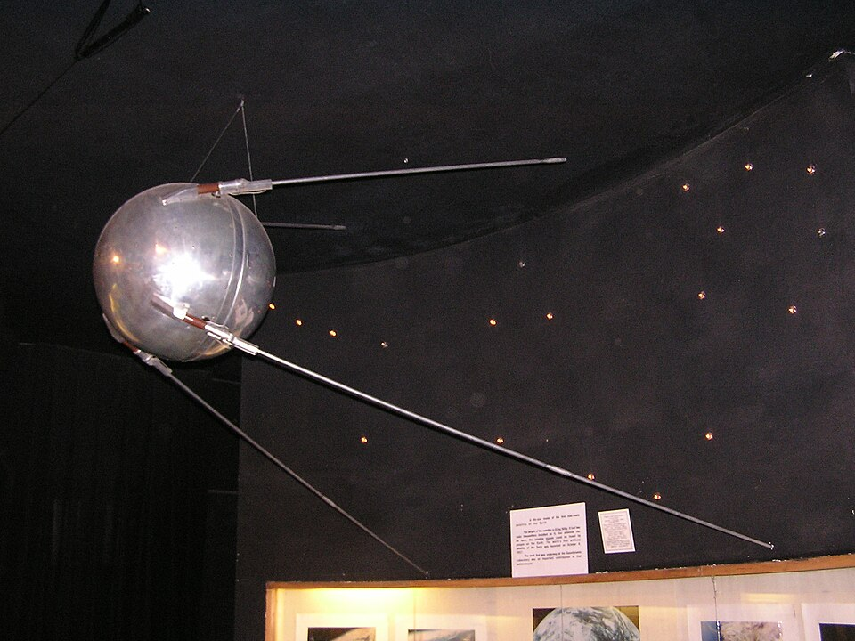
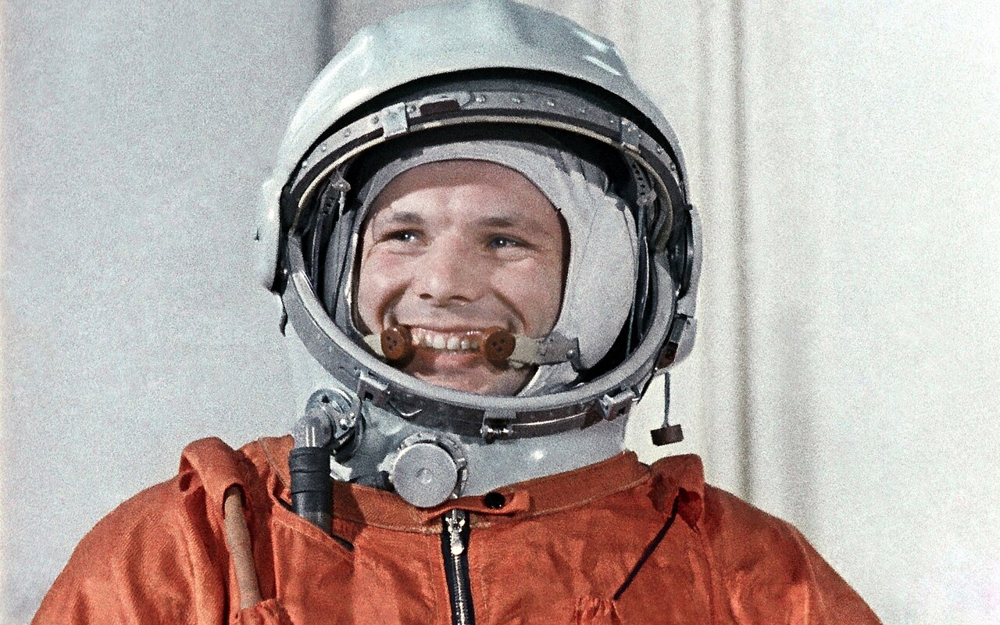
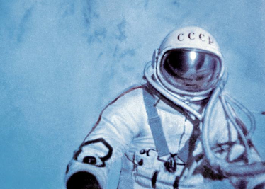
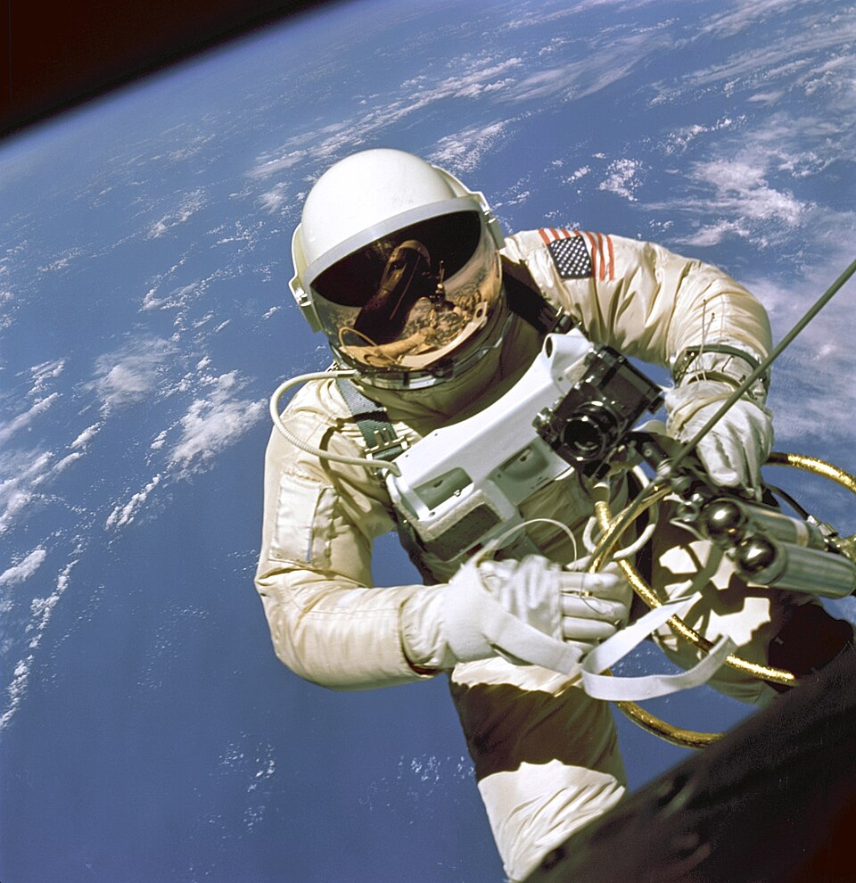
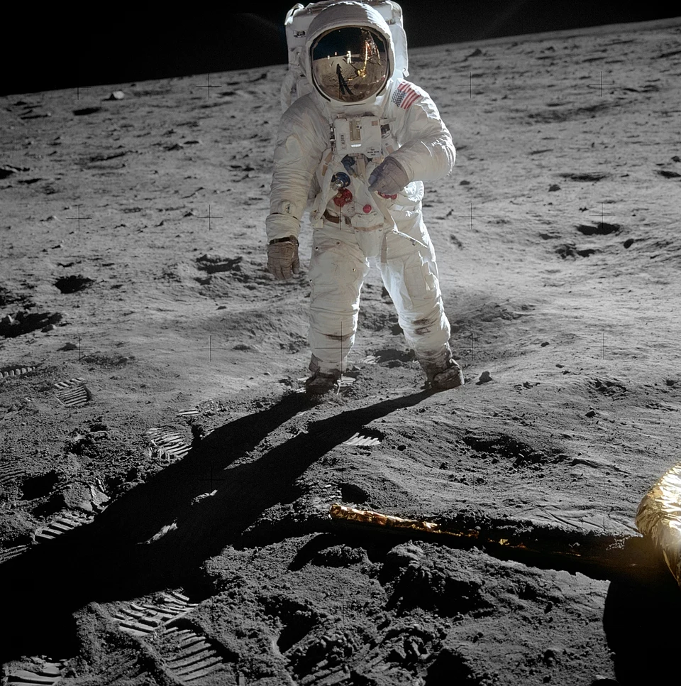
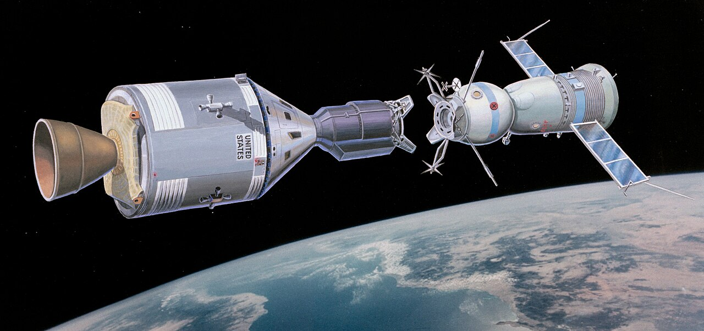
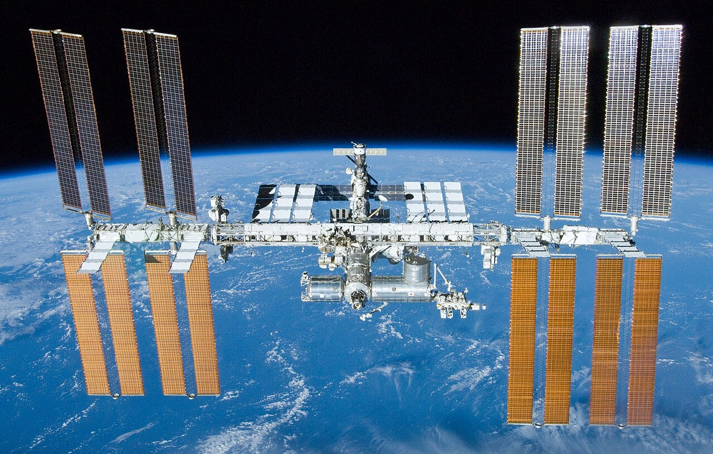

In October 1957 the Soviet Union launched Sputnik 1, the first artificial satellite, into space and it completed 1,440 orbits of the Earth. The US followed with their first artificial satellite, Explorer 1, not long after in January 1958. The space race between the Soviet Union and the US is just getting started!

Sputnik 1 Replica Photo By By Andrew Butko
In April 1961 the Soviet Union sent the first person into space, Yuri Gagarin, in the Vostok 1. Yuri reached an altitude of 202 miles and his flight lasted 108 minutes. The US sent Alan Shepard into space the next month in the Freedom 7. The first woman wasn’t sent into space until 1963, when the Soviet Union sent Valentina Tereshkova up in the Vostok 6.

Yuri Gagarin Photo By Mos.ru
Alexei Leonov was the first person to complete a spacewalk, in March 1965. Just 3 months later Ed White became the first American to complete a spacewalk. Both Alexei and Ed made sure to get selfies while on their spacewalks!

Alexei Leonov Photo From BBC News

Ed White Photo By NASA / James McDivitt
In July 1969, Apollo 11 landed on the moon and Neil Armstrong and Buzz Aldrin became the first people to set foot on the Moon. As Armstrong stepped onto the surface of the Moon, he said 'That’s one small step for [a] man, one giant leap for mankind.' Five more Apollo missions landed on the Moon by 1972, with astronauts driving as far as 56 miles across the surface of the Moon using rovers to collect moon rock samples for study.

Buzz Aldrin Photo By Neil Armstrong
In July 1975 the US and the Soviet Union together conducted the first crewed international space mission, the Apollo-Soyuz. The Apollo and Soyuz spacecrafts docked together for nearly two days, during which the American and Soviet crews exchanged gifts, visited each other's ships, shared meals, and conducted joint scientific experiments.

Apollo-Soyuz Artist Rendering By R. Bruneau
In 1998 an international treaty was signed by 15 countries (Canada, Japan, the Russian Federation, the United States, and eleven Member States of the European Space Agency (Belgium, Denmark, France, Germany, Italy, The Netherlands, Norway, Spain, Sweden, Switzerland and the United Kingdom)) to create and permanently inhabit an International Space Station. The ISS has been continuously manned since 2000, and has been visited by astronauts and space tourists from 17 countries.

ISS Photo By NASA/Crew of STS-132
{kind=link}